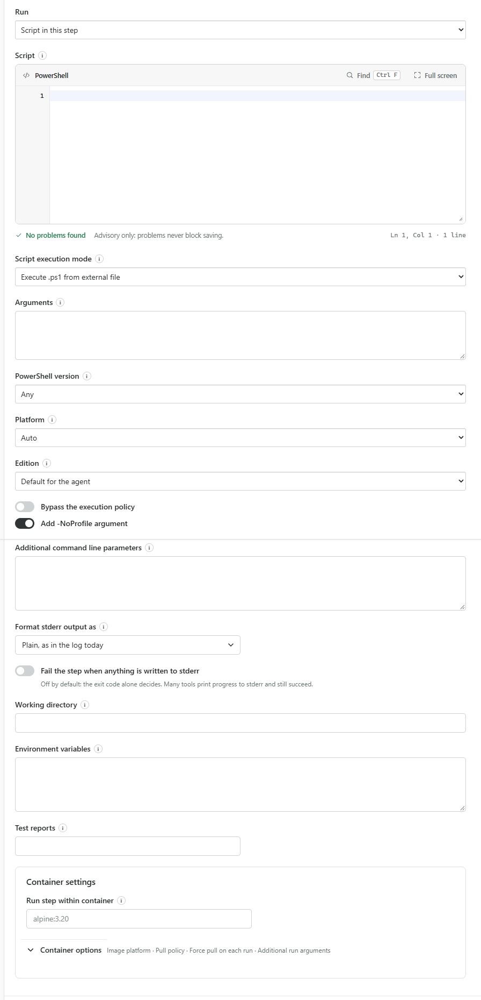

PowerShell
Runs a PowerShell script you type, or a .ps1 file, with Windows PowerShell or pwsh (PowerShell 7).
When to use it
Use it for build scripts you already wrote in PowerShell: packaging, signing, copying to a share, calling the console SDK tools. It works on Windows agents, and on Linux and macOS agents that have pwsh.
How to set it up
- Open the build configuration and click Settings › Build Steps.
- Click Add build step. Type
PowerShellin Filter step types if you like, then click the PowerShell tile (group Command line and scripts). - Type a Step name, for example
Pack build. - Choose Run: type the script, or give a script file. Set the other fields described below.
- Optional: set Execute step, Conditions and Retry on failure. See The steps list and the step editor.
- Click Save.

Every field
| Field | What it does | Default | Example |
|---|---|---|---|
| Run | Script in this step or File. | Script in this step | File |
| Script | The script text in the code editor. %name% is replaced with that build parameter when the step runs. | Empty | Write-Host "Packing $env:CONFIG" |
| Script file | A .ps1 file, relative to the working directory. The agent's execution policy applies to it. | Empty | Build/package.ps1 |
| Script execution mode | Execute .ps1 from external file runs -File. Put script into PowerShell stdin with -Command - writes the script, or the file, to PowerShell's standard input. Script arguments are hidden and not passed in that mode. | Execute .ps1 from external file | Put script into PowerShell stdin |
| Arguments | One argument per line, passed to the script. Each line stays one argument, whatever it holds. Other processes on the agent can see arguments, so pass a secret through the environment. | Empty | -Config on one line, Shipping on the next |
| PowerShell version | The agent must report this version. 5.1 is Windows PowerShell, 7 is pwsh, unless Edition is set. Any adds no requirement. A step in a container needs none. | Any | 7 |
| Platform | Windows agents only. x86 starts the 32-bit Windows PowerShell, x64 the 64-bit one. Auto starts the edition chosen below. On a Unix agent x86 or x64 stops the step. | Auto | x64 |
| Edition | Default for the agent (Windows PowerShell on Windows, pwsh on Unix agents), PowerShell 7 (pwsh) or Windows PowerShell. | Default for the agent | PowerShell 7 (pwsh) |
| Bypass the execution policy | Off: the agent's policy is used as it is, and a policy that blocks scripts fails the step. On: runs with -ExecutionPolicy Bypass on Windows agents. No effect on Unix agents. | Off | On |
| Add -NoProfile argument | On: PowerShell does not load the profile of the account the agent runs as. Untick to load it. | On | On |
| Additional command line parameters | Split on spaces and line breaks into separate PowerShell parameters, put before the script. Double quotes group a parameter that holds spaces. Script arguments go after the script; these go to PowerShell. | Empty | -NonInteractive |
| Format stderr output as | Show stderr lines in orange or red in the log. | Plain | Error |
| Fail the step when anything is written to stderr | Off: the exit code alone decides. | Off | On |
| Working directory, Environment variables, Test reports, Run step within container | The same in every runner. See Fields every runner has. |
A worked example
A Windows agent packs a Unity build into a zip and passes the configuration as a script argument. Step name Pack build, Run = File, Script file = Build/pack.ps1, Arguments:
-Config
%CONFIG%
-Out
Builds\Win64The script Build/pack.ps1:
param([string]$Config, [string]$Out)
Compress-Archive -Path "$Out\*" -DestinationPath "Skyforge-$Config.zip" -Force
Write-Host "Packed Skyforge-$Config.zip"What you see when it runs
The console shows the PowerShell command line after a $, then the output. A non-zero exit code fails the step. With Format stderr output as set, error text shows in colour.
Problems and fixes
| Problem | What to do |
|---|---|
| The PowerShell command was not found on this agent | Install PowerShell there or put it on the PATH. The step waits for an agent that reports the chosen version. |
| A policy that blocks scripts fails the step | Tick Bypass the execution policy, or sign the script. |
| The PowerShell script file … was not found in the working directory | Check the path. It is relative to the Working directory. |
| The PowerShell platform x86 or x64 applies to Windows agents only | Set Platform to Auto. |
| The PowerShell platform x86 or x64 means Windows PowerShell | Set Edition to the default or Windows PowerShell, or Platform to Auto. |
| Arguments are missing in the script | In stdin mode the script arguments are not passed. Use the file mode. |
| A step in a container cannot take its script on standard input | Use the file execution mode. |